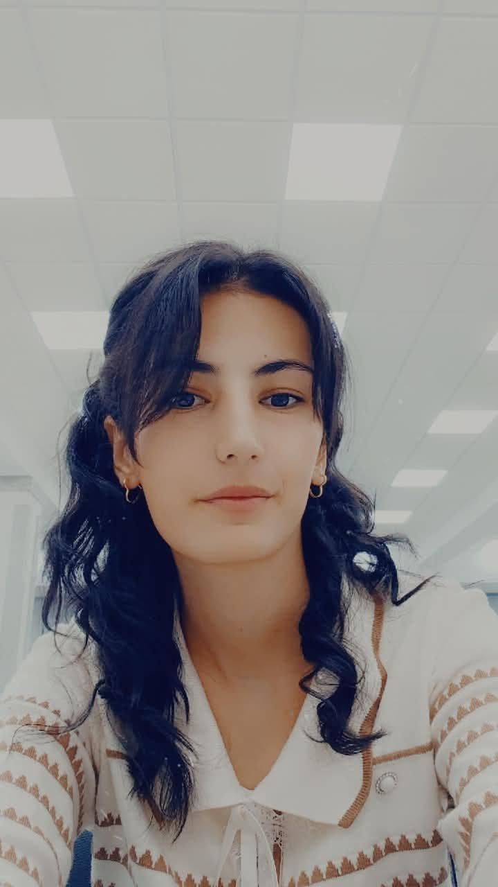

DASTURLASH · INNOVATSIYA
Nafisa
Norqulova.
Raqamli loyihalar, ta’lim va zamonaviy texnologiyalar.
Loyihalarim ↗PORTFOLIO / ENGINEERING

Portfolio
Ta’lim, loyihalar va yutuqlar.
Diplomni ko‘rish →DASTURLASH · INNOVATSIYA
Raqamli loyihalar, ta’lim va zamonaviy texnologiyalar.
Loyihalarim ↗PORTFOLIO / ENGINEERING

Ta’lim, loyihalar va yutuqlar.
Diplomni ko‘rish →